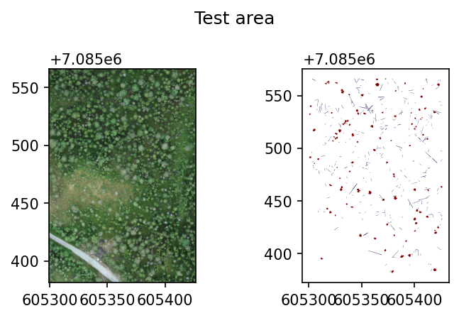
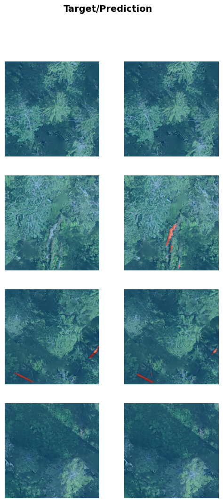

import rasterio as rio
import geopandas as gpd
from pathlib import Path
import rasterio.plot as rioplot
import matplotlib.pyplot as pltUnet workflow
Example workflow for training a semantic segmentation model with
fastai
path_to_data = Path('workflow_examples/')
train_raster = path_to_data/'104_28_Hiidenportti_Chunk1_orto.tif'
train_shp = path_to_data/'104_28_Hiidenportti_Chunk1_orto.geojson'
test_raster = path_to_data/'104_42_Hiidenportti_Chunk5_orto.tif'
test_shp = path_to_data/'104_42_Hiidenportti_Chunk5_orto.geojson'Example data is RGB UAV imagery from Hiidenportti, and the task is to detect and segment different deadwood types. The reference data are annotated as polygons, and target column is layer.
Training area looks like this.
fig, axs = plt.subplots(1,2, dpi=150, figsize=(10,3))
with rio.open(train_raster) as src:
rioplot.show(src, ax=axs[0])
train_gdf = gpd.read_file(train_shp)
train_gdf.plot(column='layer', ax=axs[1], cmap='seismic')
plt.suptitle('Train area')
plt.tight_layout()
plt.show()
And test area looks like this.
fig, axs = plt.subplots(1,2, dpi=150, figsize=(5,3))
with rio.open(test_raster) as src:
rioplot.show(src, ax=axs[0])
test_gdf = gpd.read_file(test_shp)
test_gdf.plot(column='layer', ax=axs[1], cmap='seismic')
plt.suptitle('Test area')
plt.tight_layout()
plt.show()
Install required dependencies
Simplest way to install fastai is
conda install -c fastchan fastaiOther ways to install can be found here.
Create a raster dataset
In this example, the data are split into 224x224 pixel tiles with no overlap.
CLI
geo2ml_create_raster_dataset \
example_data/workflow_examples/104_28_Hiidenportti_Chunk1_orto.tif \
example_data/workflow_examples/104_28_Hiidenportti_Chunk1_orto.geojson \
example_data/workflow_examples/unet/train \
--target_column layer --gridsize_x 224 --gridsize_y 224
geo2ml_create_raster_dataset \
example_data/workflow_examples/104_42_Hiidenportti_Chunk5_orto.tif \
example_data/workflow_examples/104_42_Hiidenportti_Chunk5_orto.geojson layer \
example_data/workflow_examples/unet/test \
--target_column layer --gridsize_x 224 --gridsize_y 224Python
from geo2ml.scripts.data import create_raster_datasetoutpath = path_to_data/'unet'
create_raster_dataset(raster_path=train_raster, mask_path=train_shp, outpath=outpath/'train',
save_grid=False, target_column='layer', gridsize_x=224, gridsize_y=224)
create_raster_dataset(raster_path=test_raster, mask_path=test_shp, outpath=outpath/'test',
save_grid=False, target_column='layer', gridsize_x=224, gridsize_y=224)Dataset structure
Above creates the dataset to path_to_data/'unet', so that it contains folders train and test. Both of these contain
- folder
images, which contains the tiled raster patches - folder
mask_images, which contain the rasterized masks corresponding to files inimages label_map.txt, which has the mapping between integer values and classes
Train the model
from fastai.vision.all import *fnames = [Path(outpath/'train/images'/f) for f in os.listdir(outpath/'train/mask_images')]
def label_from_different_folder(fn, original_folder, new_folder):
return str(fn).replace(original_folder, new_folder)
dls = SegmentationDataLoaders.from_label_func(outpath/'train/images', bs=8,
codes=['Background', 'Standing', 'Fallen'],
fnames=fnames,
label_func=partial(label_from_different_folder,
original_folder='images',
new_folder='mask_images'),
batch_tfms = [
*aug_transforms(max_rotate=0., max_warp=0.),
Normalize.from_stats(*imagenet_stats)
])Fine-tune a Unet that uses resnet34 as the encoder.
learn = unet_learner(dls, resnet34)
learn.fine_tune(6)/home/mayrajeo/miniconda3/envs/point-eo-dev/lib/python3.11/site-packages/torchvision/models/_utils.py:208: UserWarning: The parameter 'pretrained' is deprecated since 0.13 and may be removed in the future, please use 'weights' instead.
warnings.warn(
/home/mayrajeo/miniconda3/envs/point-eo-dev/lib/python3.11/site-packages/torchvision/models/_utils.py:223: UserWarning: Arguments other than a weight enum or `None` for 'weights' are deprecated since 0.13 and may be removed in the future. The current behavior is equivalent to passing `weights=ResNet34_Weights.IMAGENET1K_V1`. You can also use `weights=ResNet34_Weights.DEFAULT` to get the most up-to-date weights.
warnings.warn(msg)
Downloading: "https://download.pytorch.org/models/resnet34-b627a593.pth" to /home/mayrajeo/.cache/torch/hub/checkpoints/resnet34-b627a593.pth
100%|███████████████████████████████████████████████████████████████| 83.3M/83.3M [00:35<00:00, 2.48MB/s]| epoch | train_loss | valid_loss | time |
|---|---|---|---|
| 0 | 0.102724 | 0.063255 | 00:31 |
| epoch | train_loss | valid_loss | time |
|---|---|---|---|
| 0 | 0.060898 | 0.049642 | 00:32 |
| 1 | 0.049917 | 0.035729 | 00:32 |
| 2 | 0.038387 | 0.032115 | 00:32 |
| 3 | 0.030265 | 0.028458 | 00:32 |
| 4 | 0.025367 | 0.025913 | 00:32 |
| 5 | 0.022732 | 0.025986 | 00:32 |
See the results.
learn.show_results(max_n=4)